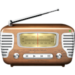
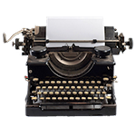
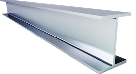
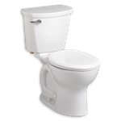
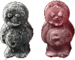
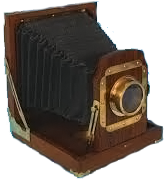
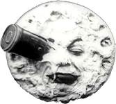
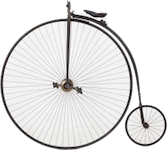
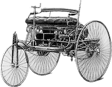

Lots of very useful things were invented during the Victorian Era, such as:
-
1851
Ice cream, made by Jacob Fussell, in the USA
-

1895
The first radio, made by Guglielmo Marconi
-

1873
The first typewriter using qwerty. This was preferable because it stopped the keys jamming. Made by Christopher Sholes
-

1854
The first steel is made by Henry Bessemer. This was made from iron, but was lighter and stronger
-

1852
The first public flushing toilet. Before toilets there were just outside rooms with dirt in them
-

1864
The first jelly babies, made by an Australian called Herr Steinbeck in Lancashire
-

1838
The first photograph taken, by Louis Daguerre in France and William Henry Fox-Talbot in Britain
-

1894
The first movie, made by the Lumiere brothers. The photo behind shows 'Le Voyage dans la Moon' by George Lumiere in 1902.
-

1872
The first bicycle (A penny farthing). The front wheel was up to six feet high, and it had no brakes.
-

1886
The first petrol car, made by Carl Benz. The speed limit was four miles per hour, but it was changed to twenty in 1896
-
1879
The modern electric light bulb, made by Thomas Edison. This was preferable because it meant that the bulb would last longer.
-
1843
The first christmas card, made by John Calcott Horsely. It was then sent by Sir Henry Cole
Back